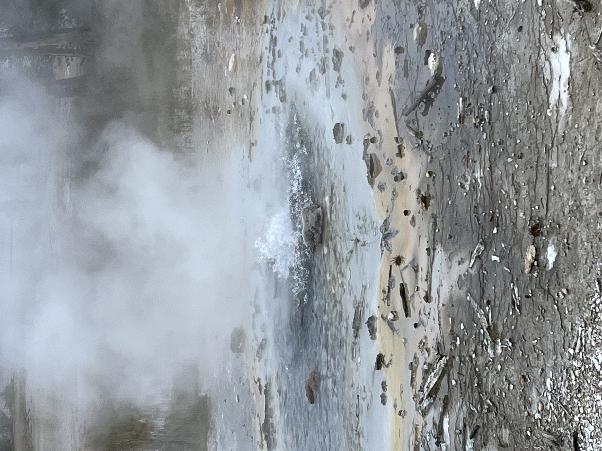

Yellowstone Sunset

Yellowstone National Park is a nearly 3,500-sq.-mile wilderness recreation area atop a volcanic hot spot.
Mostly in Wyoming, the park spreads into parts of Montana and Idaho too.
Photo Gallery


Travel
Yellowstone National Park is a nearly 3,500-sq.-mile wilderness recreation area atop a volcanic hot spot.
Mostly in Wyoming, the park spreads into parts of Montana and Idaho too.

Visitors to Burano will immediately notice the kaleidoscopic houses that reflect into the green waters of the canals.
According to popular belief, fishermen painted their houses in these distinctive shades so they could recognise the island through the thick sea fog.


Hawaii is an island state in the Western United States, about 2,000 miles from the U.S. mainland in the Pacific Ocean.
It is the only U.S. state outside North America, the only one which is an archipelago, and the only one in the tropics.


London, the capital of England and the United Kingdom, is a 21st-century city with history stretching back to Roman times.
At its centre stand the imposing Houses of Parliament, the iconic Big Ben clock tower and Westminster Abbey, site of British monarch coronations.


The Holy See, also called the See of Rome, Petrine See or Apostolic See, is the jurisdiction of the Pope in his role as the bishop of Rome.